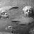

1. «Тореадори з Васюківки» — Всеволод Нестайко
Пригодницька повість про дружбу, винахідливість та веселі пригоди двох друзів.
2. «Гаррі Поттер і філософський камінь» — Дж. К. Роулінг
Історія про хлопчика-чарівника, який відкриває для себе магічний світ Гоґвортсу.